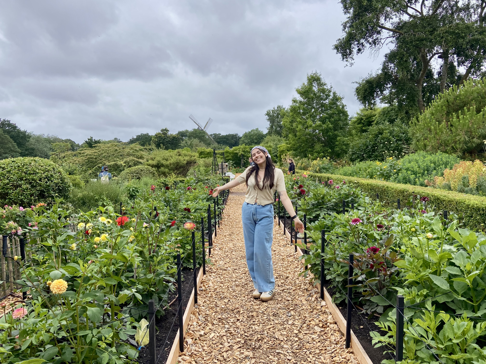

I am a computational biologist at the HudsonAlpha Institute for Biotechnology Genome Sequencing Center. My research aims to better understand how native plant ecotypes adapt to local environments. We use this information to improve the climate-resilience of crops and to make more informed conservation efforts.
In 2024, I received my PhD in Plant Biology from Penn State University where I was co-advised by Jesse Lasky and Ruairidh Sawers. My doctoral research used a combination of genomic, phenotypic, physiological, and environmental data to better understand local adaptation in cereal crop landraces (e.g. sorghum and maize). I also have a B.S. in Botany with a minor in Wildlife Ecology and Conservation from the University of Florida. While at UF, I worked with Dave Clark and my research focused on development of sweet basil hybrids with downy mildew resistance. When not thinking about cereal crops, I’m likely hiking, botanizing, or skiing.
